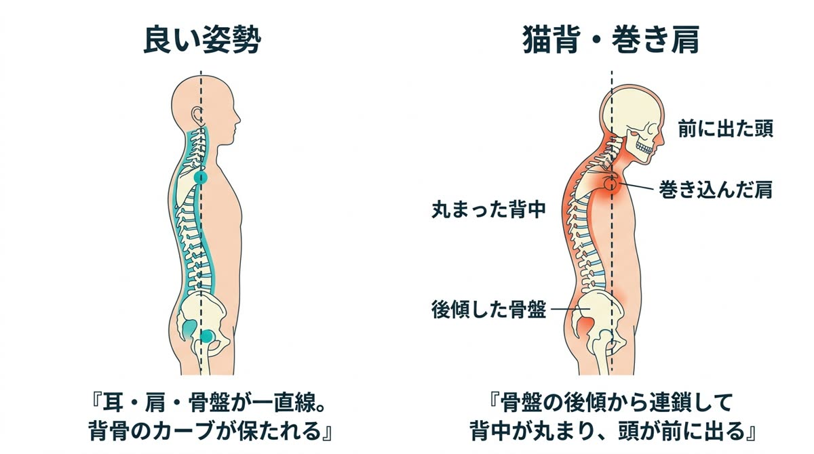
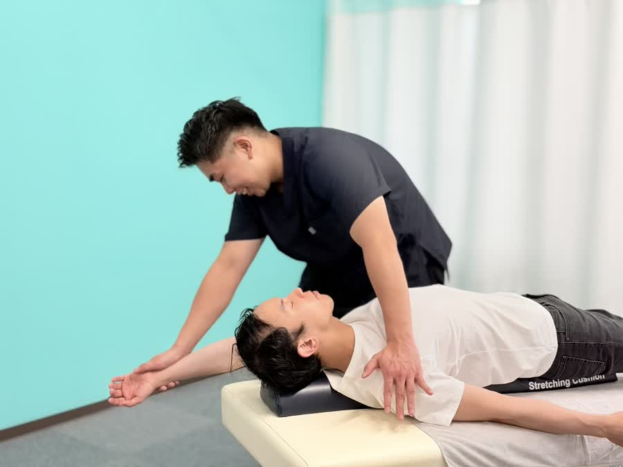

ふと映った自分の姿勢にドキッとしたことはありませんか。猫背は見た目の印象を変えるだけでなく、肩こり・頭痛・疲れやすさの根本原因でもあります。
最後の項目にチェックがついた方、それは意志の問題ではありません。身体が「猫背の形」で固まってしまっているだけ。だから矯正が必要なのです。
猫背は「背中」だけの問題ではありません。長時間の座り姿勢で骨盤が後ろに倒れると、その上に乗る背骨はバランスを取るために丸まり、頭は前へ、肩は内側へ。つまり猫背・巻き肩は、骨盤から始まる全身の連鎖なのです。
さらに、この姿勢が続くと胸の前の筋肉（大胸筋・小胸筋）は縮んで固まり、背中側の筋肉は引き伸ばされて弱っていきます。「縮んだ前側」と「弱った後ろ側」——このアンバランスが固定化すると、自力で正しい姿勢を保つことがどんどん難しくなります。


丸まった背中は肋骨の動きを制限し、呼吸が浅くなります。酸素の取り込みが減れば疲れやすくなり、集中力も低下。首や肩の筋肉には常に負担がかかり、肩こり・頭痛・ストレートネックの温床になります。猫背は「見た目の癖」ではなく、全身の不調の入り口です。
ストレッチ動画を見て伸ばすだけでは、縮んで固まった筋肉と歪んだ骨格は戻りません。必要なのは、①縮んだ胸まわりの筋肉を専門的にゆるめる、②骨盤と背骨を正しい位置へ矯正する、③正しい姿勢を保つ筋肉の使い方を身につける——の3点セットです。

気になっていること、お仕事や生活での姿勢環境を伺います。「どうなりたいか」のゴールも一緒に決めましょう。

立ち姿勢を撮影し、頭の位置・肩の巻き込み・骨盤の傾きを数値と画像でチェック。ご自身の「今」を客観的に確認いただきます。

筋肉をゆるめてから骨格を矯正し、施術後にもう一度撮影。変化を見比べながら、キープするためのセルフケアをお伝えします。

1回の施術でも姿勢の変化を実感いただける方が多いですが、長年のクセを定着させないためには複数回の矯正+セルフケアの継続が大切です。初回の姿勢分析で目安回数をご提案します。
痛みを我慢させるような施術は行いません。硬くなった筋肉を丁寧にゆるめてから矯正するので、「気持ちよかった」と言っていただくことがほとんどです。
はい、学生さんの姿勢矯正にも対応しています。成長期のうちにケアするのがおすすめです。保護者の方も一緒にご説明を聞いていただけます。